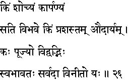
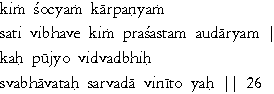

|

|
Verse 26 - Meaning:
Q: What (kim)deserves pity? (socyam)
A: A miserly nature (kaarpanyam) that merely accumulates wealth but never uses it for one's own enjoyment or for giving it to others.
Q: What is praiseworthy in one blessed with abundance ? (sati vibhave kim)
A: The quality of generosity.(prasastam audaryam)
Q: Who deserves the respect (kah pujyo) of even the learned ? (vidvadbhih)
A: That one who is by nature (svabhaavatah) endowed with humility at all times.(sarvadaa viniito yah)
|